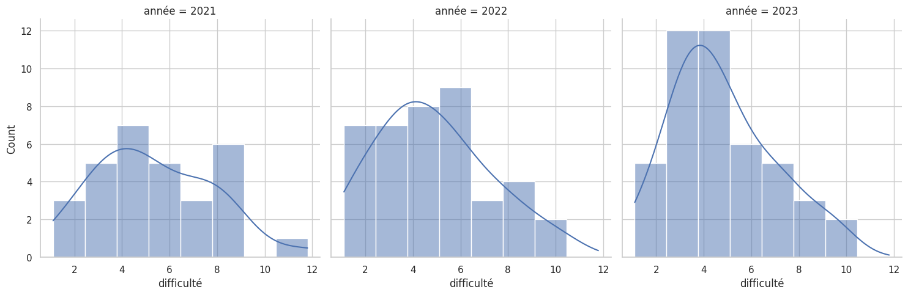
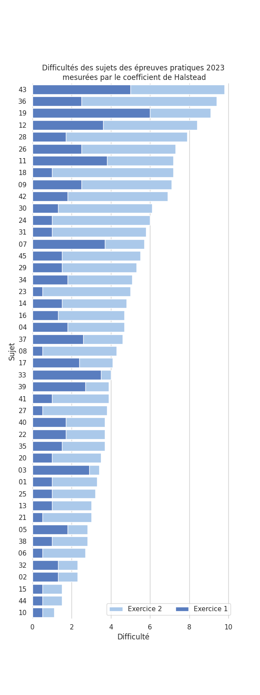

Sujets et corrigés des épreuves pratiques de NSI 2023
Site d’entrainement en ligne
Comme l’année dernière, les sujets et corrigés proposés par Gilles Lassus sous licence CC-BY-SA ont été mis au format notebook pour s’entrainer en ligne notebook à l’adresse suivante: https://jupyterlite.lyceum.fr.
Les 45 sujets de 2023 sont dans le répertoire ep-nsi-2023. Voici un lien direct vers le premier sujet.
Un tableau en bas de page donne quelques caractéristiques des 45 sujets de 2023 avec leurs liens, difficultés et fonctions implémentées pour caque exercice.
Pour chaque sujet trois fichiers sont disponibles:
23-NSI-xx.ipynb: le sujet au format notebook.23-NSI-xx.pdf: le sujet officiel disponible sur eduscol au format pdf.23-NSI-xx-correction.ipynb: la correction au format notebook proposée par Gilles Lassus sous licence CC-BY-SA.
L’ensemble est hébergé sur framagit où vous pouvez proposer des corrections ou améliorations.
Analyse du contenu des sujets
L’analyse se restreint à l’analyse du code grâce à l’outil radon et sa métrique de difficulté de Halstead.
Comparaison par rapport aux années précédentes
Outre le nombre de sujets qui passe à 45, on peut remarquer qu’ils sont d’une difficulté moyenne comparable à ceux de 2022 avec un écart type resserré.
| Année | Nombre de sujets | Difficulté moyenne | Écart-type |
|---|---|---|---|
| 2021 | 30 | 5.3 | 2.5 |
| 2022 | 40 | 4.9 | 2.4 |
| 2023 | 45 | 4.8 | 2.2 |

Comparaison des sujets entre eux
Tout d’abord, un histogramme des difficultés des sujets de 2023.

Voici les liens vers les sujets classés par difficulté décroissante avec les difficultés de chaque exercice et le nom des fonctions de chaque exercice.
| sujet | difficulté1 | difficulté2 | difficulté | fnames1 | fnames2 |
|---|---|---|---|---|---|
| 23-NSI-43 | 5 | 4.8 | 9.8 | ecriture_binaire_entier_positif |
tri_bulles |
| 23-NSI-36 | 2.5 | 6.9 | 9.4 | couples_consecutifs |
propager |
| 23-NSI-19 | 6 | 3.1 | 9.1 | recherche |
position_alphabet, cesar |
| 23-NSI-12 | 3.6 | 4.8 | 8.4 | ajoute, __init__, __repr__ |
empaqueter |
| 23-NSI-28 | 1.7 | 6.2 | 7.9 | moyenne |
dichotomie |
| 23-NSI-26 | 2.5 | 4.8 | 7.3 | multiplication |
dichotomie |
| 23-NSI-11 | 3.8 | 3.4 | 7.2 | convertir |
tri_insertion |
| 23-NSI-18 | 1 | 6.2 | 7.2 | max_et_indice |
est_un_ordre, nombre_points_rupture |
| 23-NSI-09 | 2.5 | 4.6 | 7.1 | multiplication |
chercher |
| 23-NSI-42 | 1.8 | 5.1 | 6.9 | tri_selection |
plus_ou_moins |
| 23-NSI-30 | 1.3 | 4.8 | 6.1 | moyenne |
binaire |
| 23-NSI-24 | 1 | 5 | 6 | nbr_occurrences |
fusion |
| 23-NSI-31 | 1 | 4.8 | 5.8 | nb_repetitions |
binaire |
| 23-NSI-07 | 3.7 | 2 | 5.7 | fusion |
traduire_romain |
| 23-NSI-45 | 1.5 | 4 | 5.5 | rangement_valeurs, notes_triees |
dec_to_bin, bin_to_dec |
| 23-NSI-29 | 1.5 | 3.8 | 5.3 | taille, hauteur, __init__ |
ajoute |
| 23-NSI-34 | 1.8 | 3.3 | 5.1 | moyenne |
tri |
| 23-NSI-23 | 0.5 | 4.5 | 5 | selection_enclos |
trouver_intrus |
| 23-NSI-14 | 1.5 | 3.3 | 4.8 | recherche |
insere |
| 23-NSI-16 | 1.3 | 3.4 | 4.7 | recherche_indices_classement |
moyenne |
| 23-NSI-04 | 1.8 | 2.9 | 4.7 | a_doublon |
voisinage, incremente_voisins, genere_grille |
| 23-NSI-37 | 2.6 | 2 | 4.6 | recherche |
__init__, liste_octet, est_reservee, adresse_suivante |
| 23-NSI-08 | 0.5 | 3.8 | 4.3 | max_dico |
__init__, est_vide, empiler, depiler, eval_expression |
| 23-NSI-17 | 2.4 | 1.7 | 4.1 | moyenne |
pascal |
| 23-NSI-33 | 3.5 | 0.5 | 4 | taille |
tri_selection |
| 23-NSI-39 | 2.7 | 1.2 | 3.9 | fibonacci |
pantheon |
| 23-NSI-41 | 1 | 2.9 | 3.9 | recherche |
rendu_glouton |
| 23-NSI-27 | 0.5 | 3.3 | 3.8 | recherche_min |
separe |
| 23-NSI-40 | 1.7 | 2 | 3.7 | nombre_de_mots |
__init__, getValeur, droitExiste, gaucheExiste, inserer |
| 23-NSI-22 | 1.7 | 2 | 3.7 | liste_puissances, liste_puissances_borne |
est_parfait |
| 23-NSI-35 | 1.5 | 2.2 | 3.7 | ou_exclusif |
__init__, affiche, somme_ligne, somme_col, est_semimagique |
| 23-NSI-20 | 1 | 2.5 | 3.5 | ajoute_dictionnaires |
nbre_coups |
| 23-NSI-03 | 2.9 | 0.5 | 3.4 | moyenne |
affiche, zoomListe, zoomDessin |
| 23-NSI-01 | 1 | 2.3 | 3.3 | verifie |
depouille, vainqueur |
| 23-NSI-25 | 1 | 2.2 | 3.2 | enumere |
insere, __init__, parcours |
| 23-NSI-13 | 1 | 2 | 3 | recherche |
rendu_monnaie |
| 23-NSI-21 | 0.5 | 2.5 | 3 | delta |
__init__, __str__, est_une_feuille, expression_infixe |
| 23-NSI-05 | 1.8 | 1 | 2.8 | lancer, paire_6 |
nbLig, nbCol, negatif, binaire |
| 23-NSI-38 | 1 | 1.8 | 2.8 | correspond |
est_cyclique |
| 23-NSI-06 | 0.5 | 2.2 | 2.7 | recherche |
distance, plus_courte_distance |
| 23-NSI-32 | 1.3 | 1 | 2.3 | min_et_max |
__init__, get_valeur, get_couleur, get_carte |
| 23-NSI-02 | 1.3 | 1 | 2.3 | indices_maxi |
positif |
| 23-NSI-15 | 0.5 | 1 | 1.5 | mini |
inverse_chaine, est_palindrome, est_nbre_palindrome |
| 23-NSI-44 | 0.5 | 1 | 1.5 | renverse |
crible |
| 23-NSI-10 | 0.5 | 0.6 | 1.1 | maxliste |
__init__, est_vide, empiler, depiler, parenthesage |